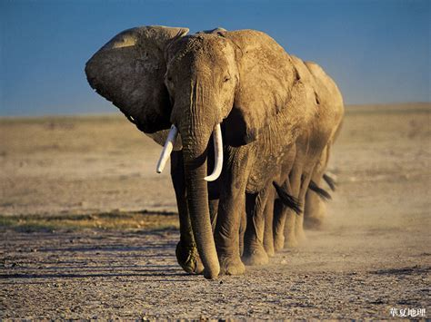
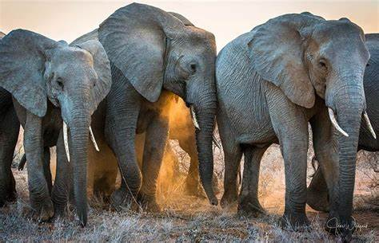

Elephants
Elephants are the large land mammals on earth and have distinctly gigantic bodies, massive ears, and extended trunks. The African Savanna (Bush) elephant is the world's largest land animal – with adult males, or bull elephants, standing up to 3m high and weighing up to 6,000kg on average. Males only reach their full size at 35-40 years - that’s well over half their lifespan as wild elephants can live for up to 60-70 years. And it’s not just the adults – even calves are huge! At birth, a baby elephant can weigh 120kg - that’s almost 19 stone. There are three species of elephants. They are the: African Savanna (Bush), African Forest and Asian Elephant. The ears of African elephants are much bigger than their cousins and are described as being shaped like the African continent, however the ears of Asian elephants are shaped like the Indian subcontinent. There’s also a difference in their trunks. - African elephants have two ‘fingers’ at the tip of their trunks, but Asian elephants have only one. The elephant is one of the most easily recognisable animals in the whole wide world. African elephants and Asian elephants are true gentle giants. Mind-blowing information alert, elephant calves - babies - are able to stand within 20 minutes of birth and can walk in 1 hour after being born. After two days, they can keep up with the herd. This wowing survival technique means that herds of elephants can keep migrating to find food and water to thrive and survive.
An elephant’s skin is around 2.5cm thick in most places on their body. The folds and wrinkles in their thick skin can hold on to - retain - up to 10 times more water than flat or normal skin does, which helps to cool them down. They keep their skin clean and protect themselves from sunburn by taking usual dust and mud baths. Elephants eat grass, leaves, shrubs, fruits and roots relying on the season and their habitat. When it’s exceptionally dry, elephants will eat more woody parts of trees and shrubs like twigs, branches and bark. They need to consume up to 150kg of food per day. That's somewhere 375 tins of baked beans – although half of this could leave the body undigested! Elephants eat so much that they can spend up to three-quarters of their day just eating. The elephant's temporal lobe (the area of the brain associated with memory) is larger and denser than the ones of people - therefore the saying 'elephants never forget' is half true. Half true because they do sometimes forget, BUT, still, they really have an amazing memory. Around 90% of African elephants have been wiped out in the last century - greatly due to the fact that humans are obsessed with ivory! There is only around 415,000 wild elephants alive today it may look like a big number but it is really actually very few. Asian elephants are also in danger, having reduced in number by at least 50% in the last three generations. There are only around 45,000 left in the wild. Once again, this is a very small number. People have destroyed their habitats by building communities and homes in what used to be previously the elephant’s home! As their habitat changes and breaks up and is lost to human settlements and agriculture, populations of Asian elephants are finding it more difficult to follow their traditional and usual migration routes to reach fresh clean water, feeding and breeding grounds, and they’re coming into often dangerous contact with humans.
| Elephant | |
|---|---|
| Diet | Herbivores |
| Lifespan | 60-70 years |
| Scientific name | Loxodonta africana |
Elephant’s trunks are truly a multi tasking tool! They use their trunks to pick up objects, for warnings, to greet other elephants, or suck up water for drinking or bathing. The trunk can contain up to 8 liters of water! They can also perform many other tasks using this amazing trunk. They even use their trunks as a snorkel when they swim! Elephants have around 150,000 muscle units in their trunk. Their trunks are perhaps the most sensitive organ found in any mammal. Both male and female African elephants grow tusks and each individual can either be left- or right-tusked, and the one they use more is usually smaller because of wear and tear. Elephant tusks serve many purposes. These extended teeth usually firt appear when the elephants are about 2 years old and continue to grow through out their lives. Tusks are used to help with feeding - scraping bark off trees or digging up roots - or as a quick defence when fighting. They can also be used to protect the elephant's trunk, lift and move objects, gather food, and during times of drought, elephants even use their tusks to dig holes to find water underground. Elephants are very important grazers and browsers, eating vast amounts of vegetation every day, spreading seeds around as they go. They also help shape the often-thick vegetation of the Asian landscape.
For example in forests, elephants create clearings and gaps in the trees that let sunlight in to reach new seedlings, helping plants grow and the forest to regenerate naturally. Forests provide important resources for both wildlife and people. Elephants will also dig for water when there isn't any surface water – opening water access for other creatures as well as themselves. By protecting elephants, we’re making sure they and their environment stay healthy and thriving. But these beautiful tusks often cause elephants threats. They're made from ivory; really wanted and desired object that drive poachers to kill these magnificent beasts, just so they can get their hands on this precious ivory. Elephants communicate in a range of ways - including: sounds like trumpet calls (some sounds are too deep or low for people to hear), body language, touch and scent. They can also communicate and contact each other through seismic signals - sounds that create vibrations in the earth - which they may detect through their bones or body parts.